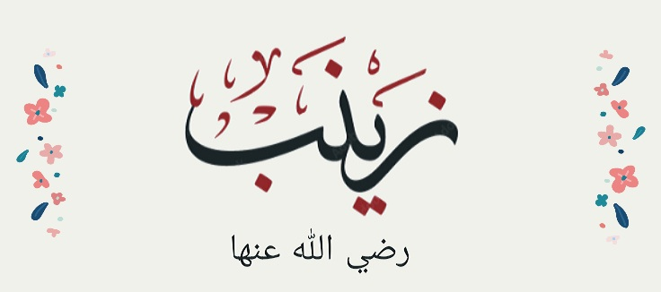
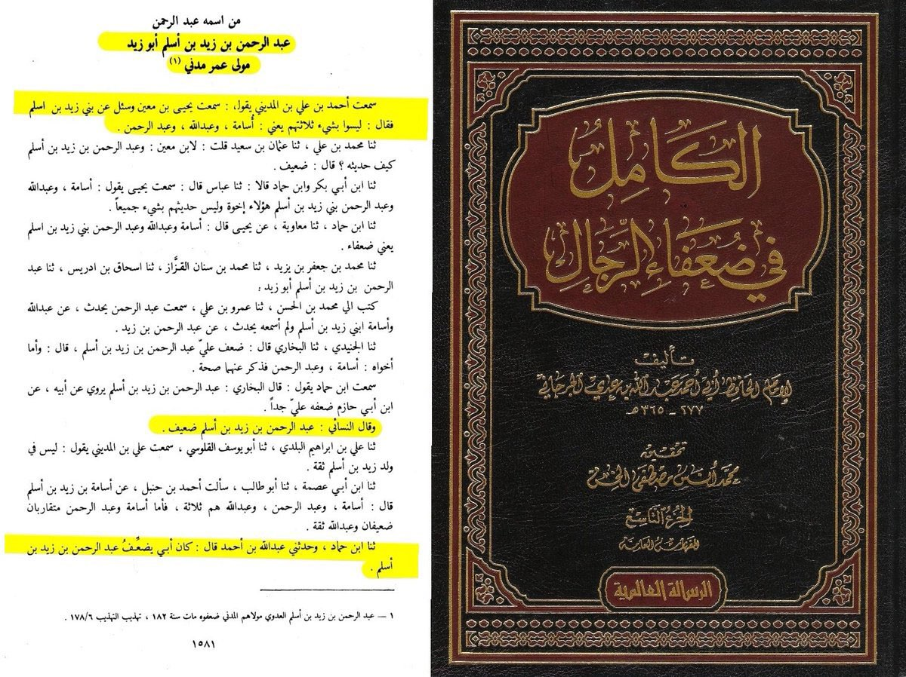
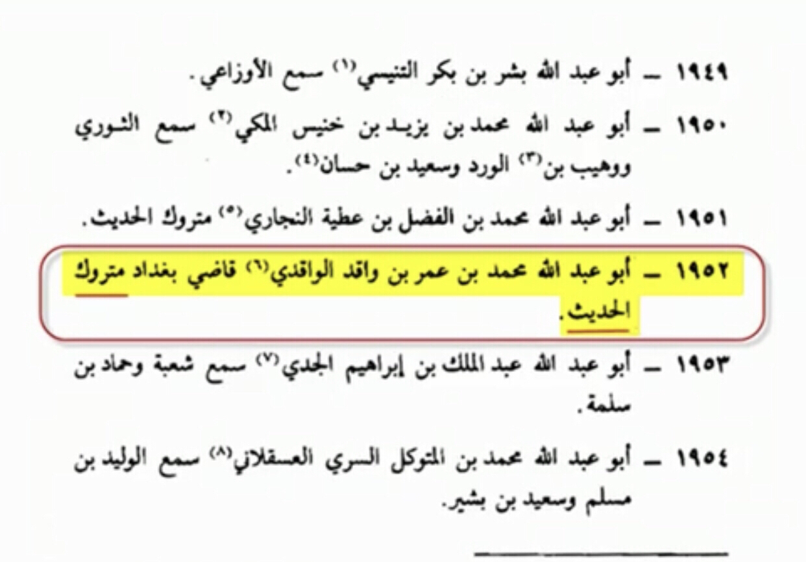
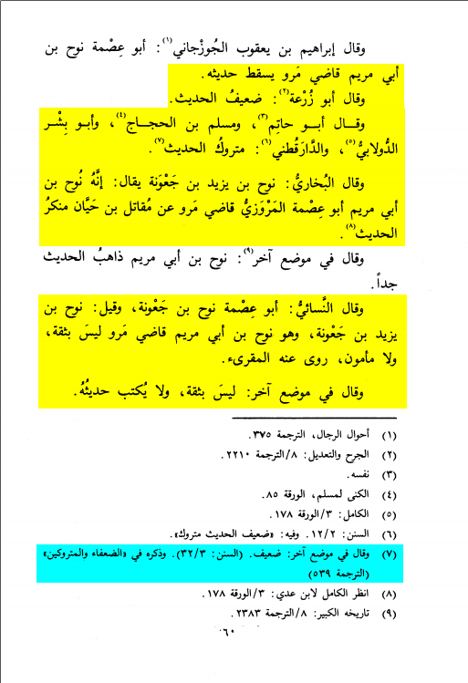

THE PROPHET'S (SAW) MARRIAGE WITH ZAYNAB (RA):
Many Christains/Atheists have been trying to prove the Prophet (saw) being lustful of 2 things;
His marriage with Zaynab (ra) who was the wife of his adopted son Zayd (ra) and Narrations mentioning that he saw her naked in her house and so got lustful.
1. Adopted son's wife:
Many people fail to notice this, but Zaynab (ra) was literally the Prophet's (pbuh) cousin that he saw dozens of times before she got with Zayd (ra)
[Siyar A'laam an-Nubalaa 2/211]
There is also no authentic source saying he forced Zayd (ra) to divorce her.
Also, they didn’t get at first with each other not the Prophet forcing them. The one who married the Prophet (saw) to Zaynab (ra) was in fact, Zayd (ra)
[Sahih Muslim 1428 a]
We can see the adopted son's wife claim is as weak as it is
2. Narrations saying he (saw) lusted for her:
There have been several narrations from tafsir saying this incident occurred.
We will be examining each and every one of these narrations to prove they are forgeries basically.
1st narration used by al-Tabari in his Tafsir
In this sanad there is someone called عبد الرحمن بن زيد بن أسلم
Is he Dha’if (weak narrator)?

Translation: “Yahya Ibn Ma’in was asked about the sons of Zayd Ibn Aslam, he said they are nothing. Al-Nasa’ī said: Da’if (weak narrator) Ahmed Ibn Hanbal and
Al-Bukhari also weakened him”
Source: Al-Kaamil fi Dhu'afaa al-Rijaal (9/1581)
The other issue is that 'Abdur-Rahmaan Ibn Zayd Ibn Aslam narrates directly from the Prophet (saw) and he did not meet him. Hence this makes the Hadith (narration)
Mursal and Mursal is part of Da’if (weak) ahadith (narrations).
Second hadith from al-tabari
قَالَ ابْنُ عُمَرَ: فَحَدَّثَنِي عَبْدُ اللَّهِ بْنُ عَامِرٍ الْأَسْلَمِيُّ، عَنْ مُحَمَّدِ بْنِ يَحْيَى بْنِ حَبَّانَ، قَالَ: جَاءَ رَسُولُ اللَّهِ صَلَّى اللهُ عَلَيْهِ وَسَلَّمَ بَيْتَ زَيْدِ بْنِ حَارِثَةَ
يَطْلُبُهُ، وَكَانَ زَيْدٌ إِنَّمَا يُقَالُ لَهُ: زَيْدُ بْنُ مُحَمَّدٍ فَرُبَّمَا فَقْدَهُ رَسُولُ اللَّهِ صَلَّى اللهُ عَلَيْهِ وَسَلَّمَ السَّاعَةَ فَيَقُول: «أين زيد؟» فجاء منزله يطلبه فلم يجده
فتقوم إليه زينب فتقول له: هنا يا رسول الله فولى فيولي يهمهم بشيء لا يكاد يفهم عنه إلا سبحان الله العظيم سبحان الله مصرف القلوب، فجاء
زيد إلى منزله فأخبرته امرأته أن رسول الله صلى الله عليه وسلم أتى منزله، فقال زيد: ألا قلت له: يدخل، قالت: قد عرضت ذلك عليه وأبى
قال: فسمعته يقول: شيئا قالت: سمعته حين ولى تكلم بكلام لا أفهمه وسمعته يقول: «سبحان الله العظيم سبحان الله مصرف القلوب» قال:
فخرج زيد حتى أتى رسول الله صلى الله عليه وسلم فقال: يا رسول الله بلغني أنك جئت منزلي فهلا دخلت بأبي أنت وأمي يا رسول الله لعل
زينب أعجبتك فأفارقها، فيقول رسول الله صلى الله عليه وسلم: «أمسك عليك زوجك» فمـا استطاع زيد إليها سبيلا بعد ذلك، ويأتي رسول الله
صلى الله عليه وسلم فيخبره فيقول: «أمسك عليك زوجك» فيقول: يا رسول الله إذا أفارقها، فيقول رسول الله صلى الله عليه وسلم: «احبس
عليك زوجك» ففارقها زيد واعتزلها وحلت قال: فبينما رسول الله صلى الله عليه وسلم جالس يتحدث مع عائشة
رضي الله عنها
This narration contains muhammed bin Abdullah bin Umar Al-Wakidi is he weak?
Translation: “imam muslim and bukhari said he muhammed bin umar Al-Wakidi is matrook al-hadith”
-Source: Al-kinaa w al-asmaa (imam muslim) volume 1 page 499 person number 1952 by name abu Abdullah bin umar al-Wakidi

3rd one is mentioned by a guy named ismah nuh bin abi mariam who is he
Translation: “Al-Bukhari al-Nisa’i and all other ahlul-ilm agree that he (Nuh bin Abi maryam) is matrook (rejected) al-hadith (narrations) basically a liar”
-Source: Tahzib al-Kamal imam Hajaj al-Mizi (RH) volume 30 page 60

Another narration found in al-baghaqi except it is isnadless so isn’t authentic We Muslims don’t accept hadith (narrations) with no sanad (chain)
because we can’t be sure how authentic it is especially in things like these
Translation: “the narrations or stories involved with the prophet being attracted to zainab and finally entering on her are all da’if sanads and are
all falsified lies on the prophet”
-Source: Tafsir al-Quran al-Azim imam ibn kathir (RH) volume 6 page number 424
Translation: “and there is no doubt that the saying of the story or narrations that the prophet being attracted to zainab and finally enteriing on her
when he had the chance is a false story untrue and put on the prophet by lie and it isn’t appropriate for him (pbuh)”
-Source: Adwaa al-Bayan fi Al-Quran volume 6 page number 640
Narrated Anas:
Zaid bin Haritha came to the Prophet (ﷺ) complaining about his wife. The Prophet (ﷺ) kept on saying (to him), "Be afraid of Allah and keep your wife."
Aisha said, "If Allah's Messenger (ﷺ) were to conceal anything (of the Qur'an he would have concealed this Verse." Zainab used to boast before the wives
of the Prophet (ﷺ) and used to say, "You were given in marriage by your families, while I was married (to the Prophet) by Allah from over seven Heavens."
And Thabit recited, "The Verse:-- 'But (O Muhammad) you did hide in your heart that which Allah was about to make manifest, you did fear the people,' (33.37)
was revealed in connection with Zainab and Zaid bin Haritha."
-Source: Sahih al-Bukhari 7420
Grade: Sahih (authentic) according to the conditions of Bukhari and Muslim
Always the authentic sunnah now what did we get from this marriage first off that the adopted son isn’t the true son and it was a special case so the prophet
can abolish it in best way possible now everyone is happy even zainab is zaid is the one who married the prophet to her what is the objection.